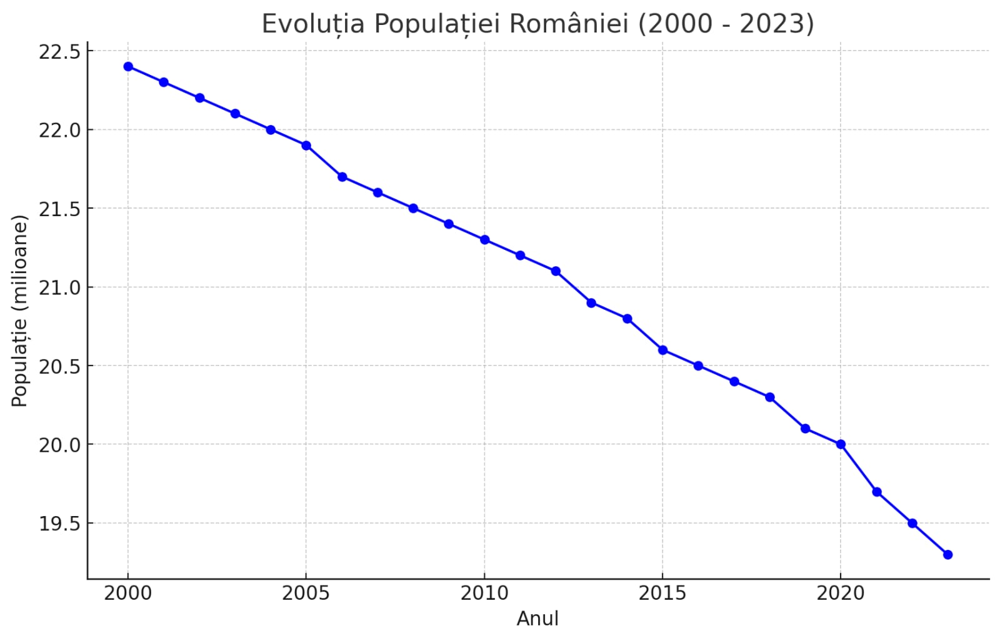

Inflația reprezintă un fenomen economic prin care prețurile bunurilor și serviciilor cresc pe o anumită perioadă, determinând scăderea puterii de cumpărare a banilor. Fenomenul inflaționist a devenit o problemă globală, iar România nu face excepție,conducand chiar topurile. Inflatia in Romania a avut o crestere accelerata din anul 2014 pana in prezent, prezentantand o diferenta de peste 13 procente.
Cu ajutorul acestui site, vom analiza influența inflației asupra tinerilor, adulților și vom aborda problemele salariilor mici în contextul României.
Pentru tineri, inflația are un impact direct și semnificativ asupra stilului de viață și al accesului la oportunități de dezvoltare. Aceștia se confruntă cu dificultăți financiare mai mari, ceea ce poate determina o serie de implicații economice și psihologice. Inflația determină creșterea costurilor în educație. Taxele școlare și universitare, prețurile cărților, materialelor educaționale și costurile de trai pentru studenți cresc constant.
„Acum doi ani era taxa mai mică. Acum, când am intrat eu, da, s-a majorat cu încă jumătate". declara o studenta, referindu-se la cresterea directa a inflatiei.”
Astfel, pentru mulți tineri, studiile superioare devin inaccesibile,
iar această barieră economică îi poate determina pe unii să renunțe la
educație.
Prețurile ridicate la imobiliare afectează accesul tinerilor la o
locuință proprie. Mulți dintre aceștia amână momentul în care să își
cumpere o locuință, fiind nevoiți să locuiască în chirie, la camin sau
cu părinții. Acest aspect contribuie la scăderea independenței
tinerilor și a ratei de economisire, având un efect asupra formării
familiei și stabilității.
Inflația poate aduce o stare de incertitudine și stres si afecta
starea psihica a studentilor deja stresati. Tinerii care își doresc o
carieră de succes și o stabilitate financiară se pot confrunta cu
anxietate din cauza dificultăților de integrare în piața muncii și a
creșterii prețurilor. Acest aspect poate afecta sănătatea lor mentală
și calitatea vieții.
Pentru adulți, inflația are implicații asupra economiei
domestice, planurilor de investiții și chiar a
deciziilor de consum. Aceștia resimt presiunea inflației, mai
ales cei cu venituri medii și mici, care au mai puține posibilități de
adaptare la creșterile de prețuri.
În cazul adulților care își întrețin familia, inflația determină o
scădere directă a puterii de cumpărare. Cheltuielile pentru produse
alimentare, energie, combustibil și alte necesități cresc, în timp ce
veniturile nu reușesc să țină pasul cu aceste majorări. Astfel, mulți
adulți sunt nevoiți să renunțe la anumite achiziții sau chiar
să reducă cheltuielile esențiale.
Pentru adulții care își planifică economii sau investiții, inflația
poate crea riscuri majore. Economiile plasate în conturi bancare
tradiționale își pierd valoarea în timp din cauza
dobânzilor mici comparativ cu rata inflației. Mulți aleg să
investească în imobiliare, titluri de stat sau alte active considerate
mai sigure, dar toate acestea sunt afectate de volatilitate.
Inflația accentuează problemele sociale și economice existente în
România, în special în ceea ce privește salariile mici. În
acest context, persoanele cu venituri reduse sunt cele mai
vulnerabile, deoarece inflația le diminuează și mai mult puterea de
cumpărare.
În România, salariile nu cresc în același ritm cu inflația,
mai ales în sectoarele publice și pentru angajații cu salarii
minime. Astfel, inflația duce la o creștere a inegalităților
sociale, iar persoanele cu venituri reduse sunt cele mai afectate,
neavând resurse pentru a se adapta la costurile în creștere.
Pentru românii cu venituri mici, acoperirea necesităților de bază
devine o provocare majoră. Mulți sunt nevoiți să renunțe la
unele servicii, să reducă consumul alimentar sau să își limiteze
cheltuielile pentru sănătate. Aceste dificultăți au consecințe pe
termen lung asupra sănătății și calității vieții, amplificând
problemele sociale.
Una dintre consecințele inflației și ale salariilor mici este creșterea migrației în rândul tinerilor și al adulților către țări cu salarii mai mari și stabilitate economică. Migrația are impact asupra economiei românești prin pierderea forței de muncă active și calificate, ceea ce poate duce la un dezastru pentru dezvoltarea economică a României.
“Implinind in cateva luni varsta la care toti devenim adulti, parerea noastra ca elevi devine din ce in ce mai importanta. Responsabilitatiile, decizile, indatoririle noastre devin mai importante ca niciodata. Niciodata nu am vrut sa ne parasim tara mult iubita, deoarece constientizam cat de frumoasa este, dar pentru a putea sa ne traim existenta aici, trebuie sa ni se ofere darul de a trai in siguranta, in liniste si mai ales intr o stabilitate financiara. Ne gandim zilnic la faptul ca Romania este o tara incredibila nu numai pentru noi, ci si pentru milioane de turisti straini care ne trec granitele anual. De ce nu poate fii promovat turismul? De ce nu putem alege sa fim o tara turistica, pe modelul Greciei, Turciei, Austriei, in loc sa ne complacem in cresterea taxelor pentru “putini” oameni ramasi in tara. -comparatie intre anul 2000 si 2023 arata ca din Romania au plecat peste 3,5 milioane de oameni - Sunt intrebari care pentru noi nu au raspuns acum, insa poate ca prin puterea tineretului unit vom reusi sa schimbam ceva.” Darius, Robert si Nicoleta.”
Un citat celebru despre inflatie al fostului prim-ministru al Marii Britanii:
Margaret Thatcher
„Inflatia este păcălirea de a crea mai mulți bani doar pentru a îți scădea puterea de cumpărare, iar cel mai dureros e că cei care plătesc prețul sunt de obicei cei mai vulnerabili.”
Inflația este un fenomen complex, cu efecte diverse asupra diferitelor categorii de vârstă și sociale. Tinerii sunt afectați prin limitarea accesului la educație și locuințe, iar adulții resimt presiunea asupra puterii de cumpărare și a economiilor. Salariile mici reprezintă o problemă gravă, mai ales în România, accentuând inegalitățile sociale și contribuind la migrarea forței de muncă. Pentru a atenua efectele inflației, autoritățile române ar putea implementa măsuri de susținere a populației, cum ar fi ajustarea salariului minim și stimularea economiilor prin instrumente financiare eficiente.